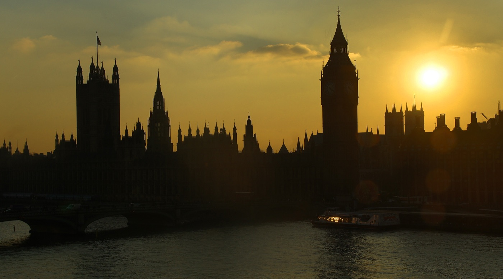
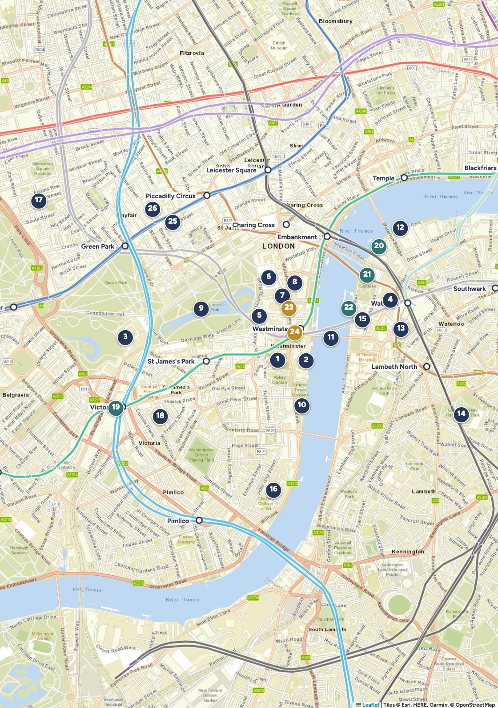

Capitolo 2
Westminster e South Bank
Re, regine e primi ministri da una parte del fiume; la ruota panoramica, i graffiti e i libri usati dall'altra.
Westminster e South BankQuartieri
96
Perché andarci
Il cuore del potere inglese, in una passeggiata
In meno di un chilometro ci sono la chiesa delle incoronazioni, il Parlamento, la residenza del re e l'ufficio del primo ministro.
Westminster è la Londra delle immagini che tutti conoscono: il Big Ben, le guardie con il colbacco, i bus rossi sul ponte. Attraversato il Tamigi, il South Bank cambia ritmo: una passeggiata lungo il fiume tra teatri, banchi di libri, skater e la ruota del London Eye. È anche la zona dove il giorno della settimana conta di più: alcune cose si vedono solo il sabato o il lunedì.
Il meglio del quartiere
- 1Westminster Abbey: incoronazioni da mille anni e la sedia con i graffiti degli scolari.
- 2La visita al Parlamento, nella sala dove si riunisce la Camera dei Comuni.
- 3Il Cambio della Guardia davanti a Buckingham Palace.
- 4Il London Eye al tramonto, con la città che si accende.
- 5Le Churchill War Rooms, il bunker rimasto com'era nel 1945.
- Arrivare
- District line diretta da Aldgate East: Westminster o St James's Park in circa 20 minuti, senza cambi.
- Tempo
- Una giornata piena per Westminster, mezza per il South Bank.
- Quando
- Attenzione alla domenica: vedi "Che giorno andarci" a p. 99.
- Prenotare
- Parlamento, Abbey, London Eye, War Rooms, Big Ben.

Blu: da vedere · verde: mangiare · senape: pub · blu scuro: shopping. Il nostro hotel è fuori mappa, 20 min con la District line.
Westminster e South BankQuartieri
98
La mappa
Tutti i luoghi del capitolo
Top sight
- 1Westminster Abbeyp. 100
- 2Parlamento e Big Benp. 102
- 3Buckingham Palacep. 104
- 4London Eyep. 106
Da vedere
- 5Churchill War Roomsp. 108
- 6Horse Guardsp. 108
- 7Downing Street e Whitehallp. 108
- 8Banqueting Housep. 109
- 9St James's Parkp. 109
- 10Victoria Tower Gardensp. 109
- 11Westminster Bridge e Queen's Walkp. 110
- 12Southbank Book Marketp. 110
- 13Leake Streetp. 110
- 14Imperial War Museump. 111
- 15County Hallp. 111
- 16Tate Britainp. 111
- 17Mount Street e Mayfairp. 112
- 18Westminster Cathedralp. 112
Mangiare
- 19Market Halls Victoriap. 115
- 20Wahaca Southbankp. 115
- 21Southbank Centre Food Marketp. 115
- 22Gillray'sp. 115
Pub
- 23The Red Lionp. 116
- 24St Stephen's Tavernp. 116
Shopping
- 25Fortnum & Masonp. 116
- 26Burlington Arcadep. 116
Westminster e South BankQuartieri
99
Orientarsi
Due rive, due ritmi
Westminster, sulla riva nord, è un triangolo: in basso l'Abbazia e il Parlamento, a sinistra St James's Park e Buckingham Palace, in alto Whitehall con i ministeri, che sale verso Trafalgar Square. Dietro il parco cominciano Mayfair e Piccadilly, con i negozi più eleganti della città.
Il South Bank, sulla riva sud, è una lunga passeggiata pedonale da Westminster Bridge a Waterloo Bridge e oltre: London Eye, centri culturali, mercati.
Che giorno andarci
SabatoL'unico giorno con le visite al Parlamento. Abbazia aperta 9-16 (ultimo ingresso 15). Captain's Inspection alle 15, non il Cambio completo.
DomenicaAbbazia solo per le funzioni (vespri cantati alle 15, gratis). Niente Parlamento. Alle 10 una parata con la banda davanti al palazzo, non il Cambio completo. Aperti War Rooms, London Eye, IWM, Food Market del South Bank.
LunedìCambio della Guardia completo alle 11, a Buckingham Palace e a Horse Guards. Abbazia aperta 9:30-16:30. Niente spettacolo a County Hall.
MartedìAbbazia aperta; di nuovo solo l'ispezione delle 15 al palazzo.
Calendario delle guardie di ottobre 2026: quello di febbraio esce a gennaio, da ricontrollare.
Tutto con una linea
La District line passa sotto l'hotel e arriva a Westminster, St James's Park, Embankment e Victoria senza cambi. Al ritorno, all'ora del tramonto, si può prendere il battello dal molo di Westminster fino alla Tower: circa £11,70 a testa online.
Westminster e South BankQuartieri
100
Top sight · 1
Westminster Abbey
Qui sono stati incoronati tutti i re e le regine d'Inghilterra dal 1066, e qui ne sono sepolti una trentina.
La chiesa gotica che vediamo fu cominciata nel 1245 da Enrico III, sul posto di un'abbazia benedettina più antica. Dentro c'è mezza storia inglese: le tombe di Elisabetta I e di Maria Stuarda, cugine e nemiche, a pochi metri l'una dall'altra; il Poets' Corner, dove riposano Chaucer e Dickens e ci sono le lapidi di Shakespeare e Jane Austen; la tomba di Isaac Newton e, accanto, quella di Stephen Hawking.
Lo sapevi?
La Coronation Chair, il trono di legno usato per tutte le incoronazioni dal 1308, è piena di scritte incise a coltello dagli scolari di Westminster nel Settecento. Una dice: "P. Abbott ha dormito su questa sedia il 5-6 luglio 1800".
Westminster e South BankQuartieri
101
La navata gotica, la più alta d'Inghilterra.
Appena entrati, al centro del pavimento, c'è la tomba del Milite Ignoto: è l'unica su cui non si cammina mai. In alto, a 16 metri, le Queen's Diamond Jubilee Galleries raccolgono i tesori dell'abbazia, con una vista dall'alto sulla navata: serve un biglietto a parte, e la domenica sono chiuse.
- Orari
- Lun-ven 9:30-16:30 (ultimo ingresso 15:30), sab 9:00-16:00 (ultimo ingresso 15:00). Domenica solo funzioni.
- Prezzi
- Adulti £32, ragazzi 6-17 anni £14: per noi 8, £202. Il sito cita anche biglietti a £5 per i ragazzi 12-18 con un genitore: da provare in fase di prenotazione.
- Prenotare
- Online, consigliato. westminster-abbey.org
- Metro
- Westminster o St James's Park, 5 min a piedi.
Il trucco della domenica
La domenica non si visita, ma alle 15 c'è l'Evensong, i vespri cantati dal coro dell'abbazia: si entra gratis dalla porta ovest e ci si siede nel coro, il cuore medievale della chiesa. È una funzione, non una visita: niente foto e niente giri. Arrivate verso le 14:30.
Westminster e South BankQuartieri
102
Top sight · 2
Parlamento e Big Ben
Un palazzo gotico lungo quasi trecento metri sul fiume, dove da secoli si decide chi governa il Regno Unito.
Il palazzo medievale bruciò quasi tutto nel 1834; quello di oggi è opera degli architetti Charles Barry e Augustus Pugin. Si salvò la Westminster Hall, del 1097, con un soffitto di travi di quercia della fine del Trecento: qui furono processati Guy Fawkes, l'uomo della Congiura delle polveri, e il re Carlo I. Big Ben, a rigore, non è la torre: è la campana da 13 tonnellate dentro la Elizabeth Tower, chiamata così dal 2012.
Lo sapevi?
Il re non può entrare nella Camera dei Comuni. L'ultimo a farlo fu Carlo I nel 1642, venuto ad arrestare cinque deputati: da allora, all'apertura del Parlamento, i deputati sbattono la porta in faccia al suo messaggero, Black Rod, che deve bussare tre volte per entrare.
Westminster e South BankQuartieri
103
La visita guidata (90 minuti) passa per Westminster Hall, la Sala del Trono della Camera dei Lord e la Camera dei Comuni. L'audioguida costa meno, esiste anche in italiano e ha una versione per ragazzi. Il tour del Big Ben sale i 334 gradini della torre fino all'orologio e alla campana: aperto anche ai turisti stranieri dagli 11 anni, quindi a tutte le ragazze.
- Quando
- Visite solo il sabato (a febbraio 2027: 6, 20 e 27). Prenotazioni già aperte.
- Prezzi
- Guidata: adulti £40, 16-24 anni £30, 5-15 anni £20 (per noi £270). Audioguida: adulti £31, un bambino gratis (circa £191). Big Ben: £55 e £35 (£380).
- Prenotare
- tickets.parliament.uk. Arrivare 20 minuti prima per i controlli, ingresso da Portcullis House.
Il trucco
I biglietti del Big Ben escono circa tre mesi prima e finiscono in poche ore: per febbraio, verso metà novembre 2026. Se il Parlamento è in seduta il lunedì o il martedì, si può assistere ai dibattiti dalle gallerie del pubblico, gratis e senza prenotazione.
Westminster e South BankQuartieri
104
Top sight · 3
Buckingham Palace
La facciata più famosa di Londra: 775 stanze, un balcone per le grandi occasioni e le guardie con il colbacco di pelo.
Era la casa di città di un duca, comprata da Giorgio III nel 1761; la prima sovrana ad abitarci fu la regina Vittoria, nel 1837. Davanti c'è il Victoria Memorial, bianco e oro, da cui parte il viale alberato del Mall. Le sale di rappresentanza si visitano solo d'estate: a febbraio il palazzo si guarda da fuori.
Lo sapevi?
La bandiera sul tetto dice se il re è in casa: lo stendardo reale quando c'è, la Union Jack quando non c'è. I colbacchi delle guardie sono alti circa 45 centimetri e sono fatti di vera pelliccia d'orso.
Westminster e South BankQuartieri
105
Le guardie sono soldati veri dei reggimenti della Household Division.
Il calendario delle guardie
Lun, mer, venCambio della Guardia completo alle 11, con la banda, circa 45 minuti.
Mar, gio, sabCaptain's Inspection alle 15, breve.
DomenicaSunday Parade alle 10, con la banda.
Schema ufficiale di ottobre 2026. Quello di febbraio esce a gennaio su householddivision.org.uk, e la cerimonia può essere annullata fino alle 10:45 se piove.
- Dove
- I gradini del Victoria Memorial o Birdcage Walk, vicino alla Wellington Barracks, si vedono meglio che dalla cancellata.
- Arrivare
- Almeno 45 minuti prima per un buon posto. Metro St James's Park o Green Park.
- Prezzi
- Gratis.
Il trucco
Senza folla: guardate la vecchia guardia che si forma a Friary Court, davanti a St James's Palace, verso le 10:45, e poi marcia lungo il Mall. Il lunedì alle 11 c'è anche il cambio della guardia a cavallo a Horse Guards: è alla stessa ora, si sceglie l'uno o l'altro.
Westminster e South BankQuartieri
106
Top sight · 4
London Eye
Mezz'ora per fare un giro completo, 135 metri sopra il Tamigi, con il Parlamento sotto i piedi.
Doveva restare in piedi cinque anni, per festeggiare il Duemila; è diventato il simbolo della Londra moderna. Le capsule di vetro girano piano, circa 26 centimetri al secondo, così lentamente che si sale e si scende senza fermare la ruota. Nelle giornate limpide si vede fino al castello di Windsor, a 40 chilometri.
Lo sapevi?
Le capsule sono 32, una per ogni distretto di Londra, ma sono numerate da 1 a 33: la numero 13 non c'è, per scaramanzia.
Westminster e South BankQuartieri
107
- Orari
- Di solito 11:00-18:00 in inverno; gli orari di febbraio 2027 non sono ancora pubblicati. A gennaio è chiuso per manutenzione.
- Prezzi
- Online da £29 adulti e £26 per 2-15 anni; alla cassa £39 e £35. La ragazza di 16 anni paga da adulta. Per noi 8 online, circa £226.
- Prenotare
- londoneye.com. Il prezzo online cambia con la richiesta.
- Tempo
- 30 minuti di giro, più la coda: fino a 45 minuti nelle ore di punta.
Il trucco
Prenotate l'ultima fascia prima del tramonto, tra le 16:15 e le 16:45: salite con la luce e scendete con la città illuminata. L'orario sul biglietto è quello in cui si entra in coda, non quello in cui si sale.
Con il vento
La ruota si ferma quando il vento è troppo forte, e il biglietto viene spostato. Con un febbraio ventoso tenete un piano B nella stessa zona: le Churchill War Rooms e l'Imperial War Museum sono al coperto.
Dal Blue Bridge di St James's Park: Buckingham Palace da una parte, il London Eye dall'altra.
Westminster e South BankQuartieri
108
Da vedere
5
Churchill War Rooms
King Charles Street · metro Westminster · adulti £34, 5-15 anni £17 (per noi £238)
Il bunker sotto i ministeri da cui Churchill guidò la guerra. Le stanze sono rimaste com'erano il giorno della vittoria sul Giappone: la Map Room con le puntine sulle carte, la camera da letto, e una finta toilette privata che in realtà nascondeva il telefono diretto con la Casa Bianca.
Tutti i giorni 9:30-18:00, ultimo ingresso 17:00. Prenotate la prima fascia, alle 9:30: i corridoi sono stretti.
6
Horse Guards e Household Cavalry Museum
Whitehall · metro Embankment o Westminster · museo: adulti £11, 5-15 anni £8, famiglia £29
Sotto gli archi su Whitehall stanno di guardia due cavalieri, che si danno il cambio ogni ora dalle 10 alle 16. Alle 16 in punto, ogni giorno, c'è la breve ispezione dei soldati. Il museo mostra uniformi e armature e, dietro una vetrata, le scuderie in funzione.
Museo 10-17 (novembre-marzo). Per noi 8 circa £73. I cavalli mordono e scalciano: niente carezze.
7
Downing Street e Whitehall
Whitehall · gratis
Il numero 10, la porta nera del primo ministro, si vede solo da lontano, attraverso i cancelli messi nel 1989. Su Whitehall ci sono anche il Cenotaph, il monumento ai caduti in mezzo alla strada, e il memoriale alle donne della Seconda guerra mondiale.
Westminster e South BankQuartieri
109
8
Banqueting House
Whitehall · aperta solo in alcune giornate · adulti £10, under 16 gratis
L'unica sala rimasta del grande palazzo reale di Whitehall, con il soffitto dipinto da Rubens nel 1636. Da una finestra di questa sala, nel 1649, Carlo I uscì sul patibolo per essere decapitato. Apre al pubblico solo in giornate annunciate: per febbraio 2027 non ce ne sono ancora.
9
St James's Park
Metro St James's Park · gratis, aperto 5:00-24:00
Il parco reale più antico di Londra. Dal 1664 ci vivono i pellicani, regalo dell'ambasciatore russo a Carlo II: li nutrono ogni giorno verso le 14:30, vicino a Duck Island Cottage, e spesso si siedono sulle panchine accanto ai visitatori. Dal Blue Bridge si fotografano insieme Buckingham Palace e Whitehall.
10
Victoria Tower Gardens
Millbank, accanto al Parlamento · gratis
Un giardino sul fiume ai piedi della Victoria Tower, con la copia dei Borghesi di Calais di Rodin. Di fronte, su Abingdon Street, c'è l'inquadratura del Big Ben senza la folla di Parliament Square. Qui dovrebbe sorgere il memoriale nazionale dell'Olocausto: parte del giardino potrebbe essere chiusa da cantieri.
Westminster e South BankQuartieri
110
11
Westminster Bridge e Queen's Walk
Dal ponte verso est, lungo il fiume · gratis, sempre aperto
Dal lato ovest del ponte si scatta la foto classica di Big Ben e Parlamento. Attraversato il fiume comincia il Queen's Walk, la passeggiata pedonale che passa davanti al London Eye, al Southbank Centre, al cinema BFI e al National Theatre. Sotto il Queen Elizabeth Hall c'è l'Undercroft, lo spazio coperto degli skater, pieno di graffiti.
12
Southbank Book Market
Sotto Waterloo Bridge · tutti i giorni 10-19, se non piove
Dal 1983 otto banchi di libri usati, stampe antiche, mappe e cartoline, al riparo sotto il ponte. Il posto giusto per un souvenir che non sia una calamita.
13
Leake Street
Sotto la stazione di Waterloo · gratis, aperto 24 ore
Un tunnel di 300 metri sotto i binari dove i graffiti sono legali, da quando Banksy ci organizzò un festival nel 2008. I muri cambiano di continuo e nel weekend si vedono gli artisti al lavoro. Meglio di giorno, e con una giacca che non teme la vernice fresca.
Westminster e South BankQuartieri
111
14
Imperial War Museum
Lambeth Road · metro Lambeth North · gratis, tutti i giorni 10-18
Il museo delle guerre del Novecento: nell'atrio pendono uno Spitfire e un razzo V-2. Fino al 28 febbraio 2027 c'è la mostra per famiglie Childhood in War, dagli 8 anni. Le gallerie sull'Olocausto sono sconsigliate sotto i 14 anni.
15
County Hall
Accanto al London Eye · metro Westminster o Waterloo
Il vecchio municipio di Londra oggi ospita l'acquario SEA LIFE (da £28 online) e uno spettacolo unico: The Witness for the Prosecution di Agatha Christie, recitato nella vera aula del consiglio, con il pubblico seduto sui banchi. Dai 10 anni; mar-sab 19:30, gio e sab anche 14:30, domenica 15:00, lunedì no. Da £20; i posti "della giuria" sono sul palco e votano il verdetto.
16
Tate Britain
Ingresso da Atterbury Street · metro Pimlico · gratis, 10-18
Cinque secoli di arte inglese: l'Ofelia di Millais, la Signora di Shalott di Waterhouse, la grande collezione di Turner. Fino al 2027 l'ingresso principale su Millbank è chiuso.
Westminster e South BankQuartieri
112
17
Mount Street e Mayfair
Da Green Park, 10-15 minuti a piedi · gratis
Il quartiere più elegante di Londra: case in mattoni rossi, gallerie d'arte, boutique. Su Mount Street e intorno a Berkeley Square si vedono spesso supercar parcheggiate, anche se a febbraio meno che d'estate. Tornando verso Piccadilly, dal ristorante Hide si intravede una scala a chiocciola di legno famosa sui social.
18
Westminster Cathedral
Victoria Street · metro Victoria · ingresso gratis
La cattedrale cattolica, a strisce bianche e rosse in stile bizantino, con l'interno di mosaici ancora incompiuto. Un ascensore porta in cima al campanile, a 64 metri, con vista a 360 gradi: funziona da mercoledì a domenica, ma potrebbe essere chiuso, quindi meglio telefonare prima (020 7798 9055). Si abbina al pranzo a Market Halls Victoria.
Gratis in questo quartiere
Il Cambio della Guardia, St James's Park con i pellicani, l'Evensong in abbazia, i dibattiti in Parlamento, il Queen's Walk, Leake Street, l'Imperial War Museum, la Tate Britain, l'ispezione delle 16 a Horse Guards. Si può riempire una giornata intera senza spendere niente.
Westminster e South BankQuartieri
113
Passeggiata
I palazzi del potere
Circa 3,5 km · mezza giornata con le soste · un lunedì, per il Cambio della Guardia completo
- Buckingham Palace alle 10:15
Posto sui gradini del Victoria Memorial per il Cambio delle 11.
- St James's Park 30 min
Attraverso il parco fino al Blue Bridge, per la foto con il palazzo.
- Churchill War Rooms 1 ora e mezza
Sul lato est del parco, con la fascia prenotata verso le 12:30.
- Horse Guards e Whitehall 30 min
Le sentinelle a cavallo, poi Downing Street e il Cenotaph.
- Parliament Square 15 min
Le statue di Churchill, Mandela e Gandhi davanti al Parlamento.
- Westminster Abbey 1 ora e mezza
Ultimo ingresso alle 15:30 nei giorni feriali.
- Victoria Tower Gardens 15 min
Il Parlamento dal fiume, mentre comincia a fare buio.
Se le gambe cedono
Le fermate della District line sono a pochi passi da ogni tappa: St James's Park (dopo il parco), Westminster (dopo Whitehall), poi una sola corsa diretta fino ad Aldgate East. Le panchine del parco e il caffè di St James's Park sono la pausa più comoda a metà giro.
Se è sabato
Al posto del Cambio della Guardia, la visita al Parlamento la mattina e l'abbazia il pomeriggio: si attraversa solo la piazza.
Westminster e South BankQuartieri
114
Passeggiata
Lungo il South Bank fino al tramonto
Circa 3 km · un pomeriggio · nel weekend, quando c'è il Food Market
- Westminster Bridge 15 min
La foto classica del Big Ben dal lato ovest, poi si attraversa.
- Leake Street 20 min
Una deviazione di cinque minuti dietro County Hall, tra i graffiti.
- Southbank Centre Food Market 45 min
Merenda o pranzo tardi in piedi, tra i banchi dietro la Royal Festival Hall.
- Undercroft e Book Market 30 min
Gli skater sotto la Queen Elizabeth Hall, poi i libri sotto Waterloo Bridge.
- London Eye 1 ora
Con il biglietto delle 16:15-16:45, per il tramonto dall'alto.
- Uber Boat verso la Tower 25 min
Dal molo del London Eye: tutti i ponti illuminati, poi Tower Bridge. Da Tower Pier all'hotel sono 15 minuti a piedi.
Westminster e South BankQuartieri
115
Mangiare
Dove mangiare in otto
£ meno di £12 a testa · ££ £15-30 · £££ oltre £40. Tutti aperti anche la domenica.
19
Market Halls Victoria £-££
191 Victoria Street · metro Victoria · dom 8-21, lun-mar 8-22
Un food hall al coperto con una decina di cucine diverse: ognuno sceglie la sua e si mangia allo stesso tavolo. Prende prenotazioni per gruppi da 8 in su e accoglie i ragazzi. La soluzione più comoda per noi a pranzo.
20
Wahaca Southbank ££
Queen's Walk, in un edificio fatto di container · dom 12-21:30
Street food messicano, tacos e piatti da dividere, con menu per ragazzi. Fino a 8 persone si prenota online.
21
Southbank Centre Food Market £
Dietro la Royal Festival Hall · ven 12-20, sab 11-20, dom 12-18
Banchi di cucina di strada da tutto il mondo, piatti da £8-15. Si mangia in piedi o nell'atrio della Royal Festival Hall. Chiude per la pausa invernale tra dicembre e fine gennaio.
22
Gillray's £££
County Hall · pranzo e cena tutti i giorni
Bistecche e roast con vista sul Parlamento dall'altra parte del fiume. Caro, ma è nello stesso edificio del teatro: comodo prima dello spettacolo delle 15 della domenica.
Il Sunday roast
La domenica a pranzo gli inglesi mangiano il roast: arrosto di manzo, pollo o agnello con patate al forno, verdure, salsa gravy e lo Yorkshire pudding, una specie di soufflé salato. I pub lo servono dalle 12 alle 17 circa e finisce presto: in otto, prenotate. Qui vicino lo fanno il Red Lion e Gillray's.
Westminster e South BankQuartieri
116
Pub e shopping
23
The Red Lion ££
48 Parliament Street · cucina dom 11-21:30
Il pub dei deputati: dentro c'è ancora la division bell, il campanello che li richiama in aula per le votazioni. Cucina da pub, famiglie benvenute, si prenota online.
24
St Stephen's Tavern ££
10 Bridge Street, di fronte al Big Ben · cucina tutti i giorni 9:30-21
Pub vittoriano con colazioni dalle 9:30: utile prima del Parlamento o dell'abbazia.
25
Fortnum & Mason
181 Piccadilly · dom 11:30-18 (fino alle 12 solo per guardare)
Il negozio di alimentari della famiglia reale, dal 1707. Il tè pomeridiano costa caro, ma una scatola di biscotti o di tè al piano terra è un souvenir perfetto. Allo scoccare dell'ora, sull'orologio della facciata escono le statuine dei signori Fortnum e Mason.
26
Burlington Arcade
Piccadilly · dom 11-18
Una galleria coperta del 1819 sorvegliata dai Beadles, guardiani in cilindro e redingote che fanno rispettare le regole di allora: vietato correre, fischiare, cantare e aprire l'ombrello. La sfida per le ragazze: arrivare in fondo senza infrangerne nessuna.
Westminster e South BankQuartieri
117
Il consiglio di TikTok
Le dritte dai video del gruppo
Big Ben da Abingdon Street
Per la foto senza folla: Abingdon Street, accanto ai Victoria Tower Gardens. Per la foto classica, il lato ovest di Westminster Bridge di prima mattina.
Il Tamigi in battello
Dal molo di Westminster parte l'Uber Boat: il biglietto si compra nell'app, al molo costa di più. Fino a Canary Wharf servono 35 minuti, fino alla Tower meno di mezz'ora.
L'abbazia gratis
Durante le funzioni si entra senza pagare: la domenica alle 15, i vespri cantati.
Dai video di @thevisuallife, @seeyoutofantasyland, @andreaelaura e @londontodolife, girati da Miriam il 17 ottobre 2026.
Westminster e South BankQuartieri
118
Prima di partire
Cosa prenotare per questo quartiere
- Subito
Visita al Parlamento, se la facciamo: l'unica data utile è sabato 6 e le prenotazioni sono aperte. The Witness for the Prosecution: si prenota fino ad aprile 2027.
- Metà novembre 2026
Tour del Big Ben: escono i biglietti di febbraio e finiscono in poche ore.
- Dicembre-gennaio
Westminster Abbey, Churchill War Rooms (prima fascia, 9:30), London Eye (fascia 16:15-16:45). Market Halls Victoria per il pranzo in 8.
- Gennaio 2027
Controllare il calendario delle guardie di febbraio e le giornate aperte della Banqueting House.
Biglietti del quartiere, per noi 8
Westminster Abbey
Parlamento, visita guidata
London Eye, online
Churchill War Rooms
Household Cavalry Museum
Totale se facciamo tutto
£202
£270
£226
£238
£73
£1.009
Con l'audioguida al posto della visita guidata, il Parlamento scende a circa £191. Prezzi di ottobre 2026.
Westminster e South BankQuartieri
119
Crediti fotografici
Le foto di questo capitolo
Foto da Wikimedia Commons, pubblicate con licenze Creative Commons o in pubblico dominio. Mappe: Esri, HERE, Garmin e i contributori di OpenStreetMap. Linee della metro: OpenStreetMap.
- w_apertura: Steve Evans from Citizen of the World, CC BY 2.0, commons.wikimedia.org/wiki/File:London_Parliament_on_the_River_Thames_(6812540384).jpg
- w_abbey: Prioryman, CC BY-SA 4.0, commons.wikimedia.org/wiki/File:Westminster_Abbey_west_front_March_2015.jpg
- w_abbeyin: Herry Lawford from London, UK, CC BY 2.0, commons.wikimedia.org/wiki/File:Westminster_Abbey_Interior.jpg
- w_parliament: Robert Lamb, CC BY-SA 2.0, commons.wikimedia.org/wiki/File:View_of_the_Houses_of_Parliament_from_Westminster_Bridge_-_geograph.org.uk_-_4435444.jpg
- w_bigben: Ermell, CC BY-SA 4.0, commons.wikimedia.org/wiki/File:London_Big_Ben_Inner_Clock_Face_1070925-PSD.jpg
- w_westhall: Tristan Surtel, CC BY-SA 4.0, commons.wikimedia.org/wiki/File:Westminster_Hall_interior.jpg
- w_buckingham: Diliff, CC BY-SA 3.0, commons.wikimedia.org/wiki/File:Buckingham_Palace,_London_-_April_2009.jpg
- w_guard: bortescristian, CC BY 2.0, commons.wikimedia.org/wiki/File:Changing_of_the_Guard,_Buckingham_Palace.jpg
- w_eye: LittleRoamingChief, CC BY 2.0, commons.wikimedia.org/wiki/File:2024--15_September--London_Eye_Capsule_and_Palace_of_Westminster.jpg
- w_bluebridge: Tristan Surtel, CC BY-SA 4.0, commons.wikimedia.org/wiki/File:Buckingham_Palace_from_St_James's_Park.jpg
- w_warrooms: Kaihsu Tai, CC BY-SA 3.0, commons.wikimedia.org/wiki/File:Map_Room_Cabinet_War_Rooms_20060617.jpg
- w_horseguards: Rept0n1x, CC BY-SA 3.0, commons.wikimedia.org/wiki/File:Royal_Horse_Artillery_sentry,_Horse_Guards,_Whitehall_-_DSC08087.jpg
- w_downing: Editor5807, CC BY 3.0, commons.wikimedia.org/wiki/File:Downing_Street_security_gates_in_November_2011.JPG
- w_banqueting: The wub, CC BY-SA 3.0, commons.wikimedia.org/wiki/File:Banqueting_House_03.jpg
- w_pelican: Daderot, CC0, commons.wikimedia.org/wiki/File:Pelican_-_St._James's_Park_-_London,_UK_-_DSC06757.jpg
- w_burghers: Charlie, CC BY 2.0, commons.wikimedia.org/wiki/File:The_Burghers_of_Calais,_Victoria_Tower_Gardens.jpg
- w_bookmarket: jeuwre, CC BY-SA 3.0, commons.wikimedia.org/wiki/File:Bookselling_outdoors.jpg
- w_leake: Ethan Doyle White, CC BY-SA 4.0, commons.wikimedia.org/wiki/File:Leake_Street_Graffiti_Tunnel_Looking_North.jpg
- w_iwm: Zorbedit, CC BY-SA 4.0, commons.wikimedia.org/wiki/File:Imperial_War_Museum_2014_New_Atrium_01.jpg
- w_southbank: Lewis Clarke, CC BY-SA 2.0, commons.wikimedia.org/wiki/File:London_,_Lambeth_-_South_Bank_Riverside_Walk_-_geograph.org.uk_-_1741006.jpg
Westminster e South BankQuartieri
120
Appunti